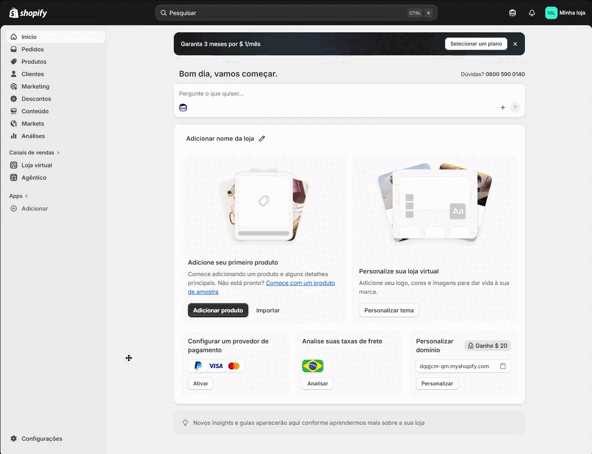
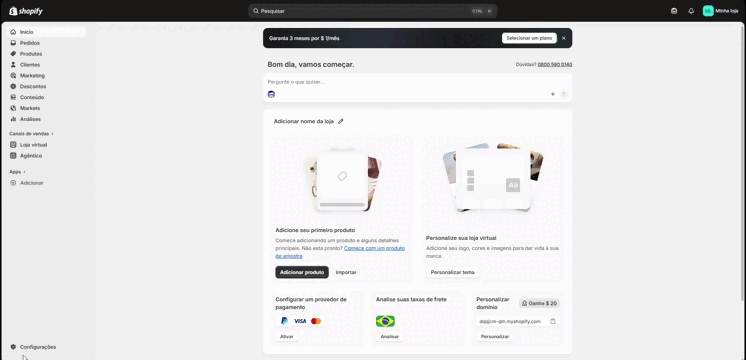
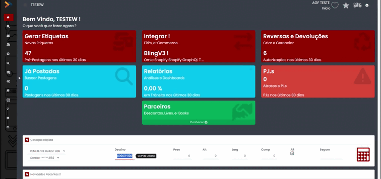
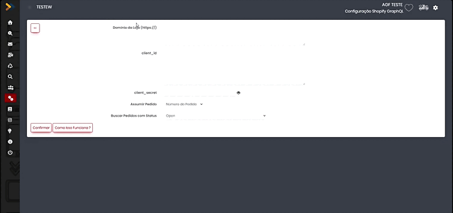
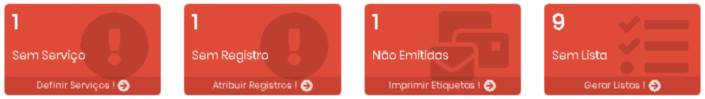

Integração MeusCorreios x Shopify
Pegando o Domínio, Client_id e Client_secret no Shopify
1. Domínio de sua loja: Dentro da área de Admin da Shopify entre em Configurações – Dominios

2. client_id e client_secret, é gerado na Área de Dev da Shopify para acessar entre em Configurações – Apps – Desenvolver Apps - Desenvolver Apps no Dev Dashboard

a. Dentro do Dev Dashboard clique em Criar APP – Nomeie como preferir – Cole na guia Acesso Escopos as seguintes informações:
read_all_orders,read_assigned_fulfillment_orders,write_assigned_fulfillment_orders,write_draft_orders,read_draft_orders,write_order_edits,read_order_edits,read_orders,write_orders,read_products,write_products,read_third_party_fulfillment_orders,write_third_party_fulfillment_orders,customer_read_draft_orders,customer_read_orders,customer_write_orders
b. Clique em Lançar e depois em Lançar novamente

c. Clique em Configurações para copiar o ID do Cliente e Chave Secreta para preencher no MeusCorreios
3. Depois é necessário instalar o aplicativo criado, vá em Apps – Clique no app criado – Instalar –

Configuração no MeusCorreios
Entre no menu Configurações, clique em Remetentes e em Integrações do remetente que será usado para integrar esta plataforma e selecione a opção Integrações/Shopify:

Cole o Dominio, client_id e client_secret obtidos no passo anterior, selecione o Status que irá puxar os pedidos e clique em Confirmar

Geração de Pré-Postagens de Pedidos Shopify
Aqui você deve entrar no módulo de pré-postagem do MeusCorreios, e criar um novo lote (ou utilizar um já existente).
Ao criar um novo lote, selecione a opção Integração
Shopify nas opções da criação (esta opção pode ser deixada como default
ali no menu Configurações em Importações e Integrações)
Ao utilizar um lote já existente, selecione a opção Integra/Shopify
Os dados dos pedidos serão exibidos na tela, e você pode definir como a pré-postagem deve ser feita:
a) desconsiderando ou não pedidos já incluídos no lote,
b) incluindo ou não AR nas postagens
c) considerando ou não o valor do pedido como Valor Declarado)
d) Se devem ser criadas as declarações de Conteúdo baseado nos itens de cada pedido.
Todas estas opções podem ser definidas como default entrando ali no menu Configurações em Importações e Integrações e definindo o comportamento desejado nas integrações.
O MeusCorreios irá buscar o endereçamento de cada pedido nos campos de shipping
É possível selecionar os pedidos pelo Destinatário, Serviço ou Faixa de Pedido.
Marque todos os pedidos que serão postados. Você pode utilizar o quadrinho do cabeçalho para marcar ou desmarcar todos os pedidos de cada página e ir mudando de página sem perder os itens já marcados
Caso o serviço que será usado na postagem já venha definido no pedido, cadastre os serviços no Dicionário de Serviços, para que o MeusCorreios possa atribuir o código corretamente. Se preferir, deixe que o MeusCorreios defina o serviço (o próximo item explica como fazer isso).
Pedidos que não devem ser postados devem permanecer desmarcados.
Clique no botão Gerar Pré-Postagem de Todos os Marcados para criar os destinatários para os pedidos e voltar para o lote de postagem do MeusCorreios.
Selecionando Serviços e Definindo as Etiquetas
Depois de importar os pedidos pela integração o MeusCorreios sempre vai te avisar qual processo está faltando por meio dos menus em Vermelho na tela de Pré-Postagem ou dentro dos lotes gerados.

1. Sem Serviço: aqui os pedidos foram importados, mas não tiveram serviço atribuído (verifique o seu dicionário de serviços)
2. Sem Registro: Pedidos que tiveram serviço atribuído, mas não tiveram etiqueta atribuída (pode ser falta de estoque de etiqueta, consulte seu Range de Etiquetas)
3. Não Emitidos: Pedidos que tiveram serviços e etiquetas atribuídas, mas ainda não foram impressas.
4. Sem Lista: Etiquetas que foram emitidas, mas ainda não tiveram a lista de postagem gerada (esse é o ultimo processo, feito isso é só enviar as caixas para a agencia que atende sua empresa)
Possíveis Erros e Soluções
A Integração retornou um Erro e não pode ser concluída!

Aqui o MeusCorreios tentou acessar a integração e não conseguiu, verifique os dados informados na configuração da integração. Também é possível gerar o Log de erros clicando no botão Log Pós Integração.
Serviço não atribui ao clicar no botão Atribui Serviços

Se ao clicar no Atribuir e os pedidos não sumirem, verifique se o serviço selecionado possui abrangência para o CEP de destino (PAC local por exemplo)
Atribui Serviço, mas não atribui Etiqueta

Se a opção Serviço for preenchida e ao clicar no botão F6 Assume Serviços Selecionados e Atribui Registro o pedido não sumir, verifique seu estoque de etiquetas ou entre em contato com a AGF que atende sua empresa e solicite um novo Range de Etiquetas para o serviço selecionado.